Overview
litReview helps you summarize and visualize categorical
data extracted during a literature review. Every plot function returns a
standard ggplot that you can customize with +. Column names
can be passed bare or quoted.
library(litReview)
data(studies)
head(studies)
#> StudyID bibKey Author Year
#> 1 S01 author1_2018 Garcia et al. 2020
#> 2 S02 author2_2022 Chen et al. 2024
#> 3 S03 author3_2018 Mueller et al. 2018
#> 4 S04 author4_2018 Patel et al. 2022
#> 5 S05 author5_2019 Johnson et al. 2019
#> 6 S06 author6_2021 Kim et al. 2019
#> Reference
#> 1 Garcia et al. (2020). Title of study S01. Journal Name, 1-10.
#> 2 Chen et al. (2024). Title of study S02. Journal Name, 1-10.
#> 3 Mueller et al. (2018). Title of study S03. Journal Name, 1-10.
#> 4 Patel et al. (2022). Title of study S04. Journal Name, 1-10.
#> 5 Johnson et al. (2019). Title of study S05. Journal Name, 1-10.
#> 6 Kim et al. (2019). Title of study S06. Journal Name, 1-10.
#> Country Design SampleSize FollowUpWeeks
#> 1 Egypt Qualitative 50 8
#> 2 Italy Cohort 300 8
#> 3 Nigeria\nGhana Qualitative 300 4
#> 4 Saudi Arabia\nTurkey\nSwitzerland Cross-sectional 150 8
#> 5 Mexico Mixed methods 75 12
#> 6 Belgium\nSingapore\nIndia RCT 1200 NA
#> AgeGroup Setting Intervention
#> 1 Adults Primary care CBT
#> 2 Children Community Education
#> 3 Older adults Online Combined
#> 4 Adults Mixed Combined
#> 5 Adults Mixed Exercise
#> 6 Adults\nOlder adults Hospital CBT\nMindfulness
#> Outcome AnalysisApproach RiskOfBias FundingSource
#> 1 Function Thematic analysis Low <NA>
#> 2 Quality of life ANOVA Moderate None
#> 3 Quality of life ANOVA Low University
#> 4 Pain\nFunction\nQuality of life Narrative synthesis Low Foundation
#> 5 Pain ANOVA High None
#> 6 Function\nQuality of life Mixed methods Low Industry
#> OpenAccess InterventionType
#> 1 No Behavioral
#> 2 Yes Educational
#> 3 No Multimodal
#> 4 No Multimodal
#> 5 No Physical
#> 6 No BehavioralBar chart
reviewBar() produces a horizontal bar chart with
frequency and percentage labels.
reviewBar(studies, Design)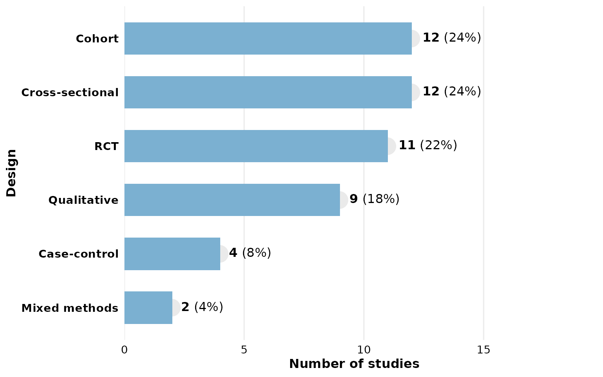
Customize with + like any ggplot:
library(ggplot2)
reviewBar(studies, Design, fill = "#59a14f") +
labs(title = "Study Designs", subtitle = "n = 12 studies")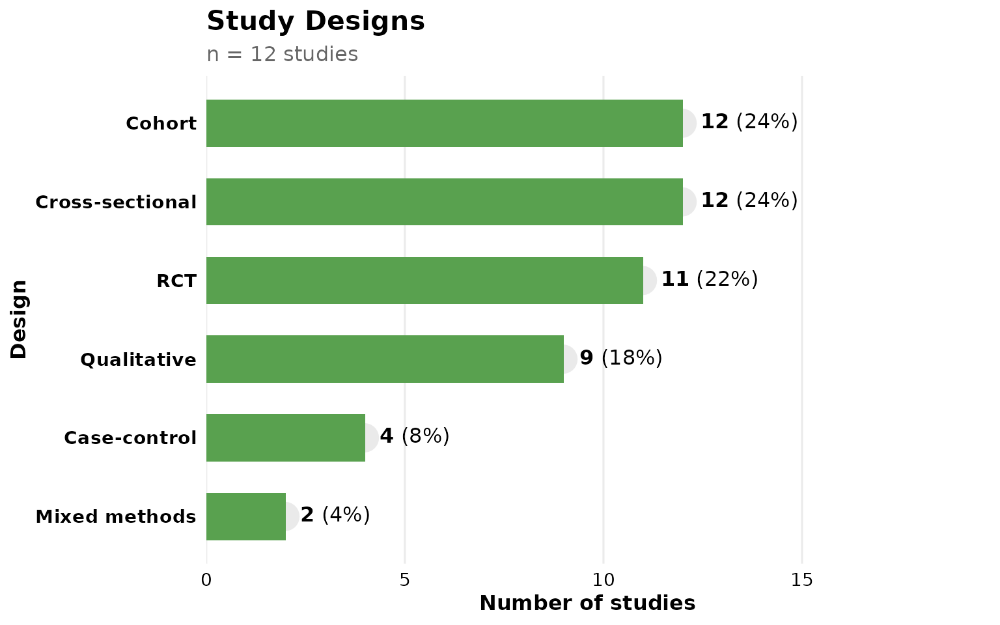
Study labels on bars
Set studlabs = TRUE to overlay the contributing study
IDs on each bar:
reviewBar(studies, Design, fill = PALETTE[2], studlabs = TRUE)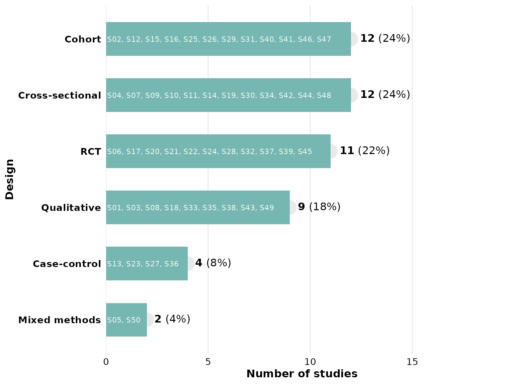
Multi-value columns
The Outcome column contains multiple values per cell
separated by "\r\n":
reviewBar(studies, Outcome, fill = PALETTE[4], width = 0.6)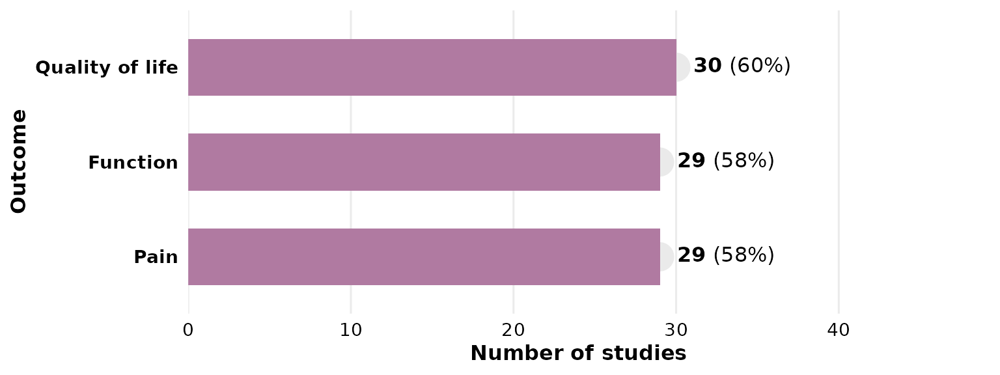
Adjusting label space
If labels are clipped, increase label_space (default
1.6):
reviewBar(studies, Country, fill = PALETTE[6], label_space = 2)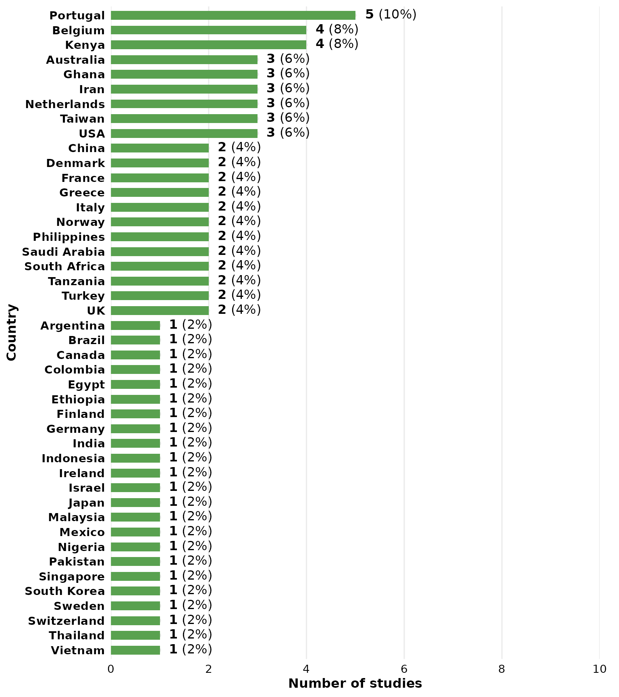
Waffle chart
Each square represents one study occurrence:
reviewWaffle(studies, Outcome, ncol = 11)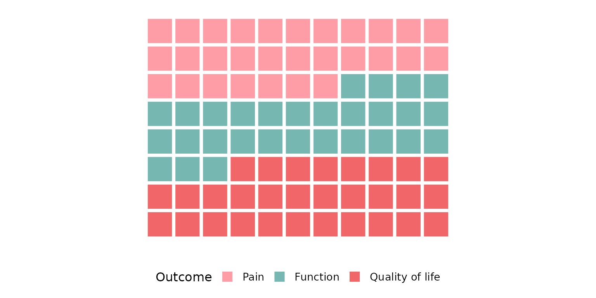
Donut / pie chart
reviewPie(studies, Design)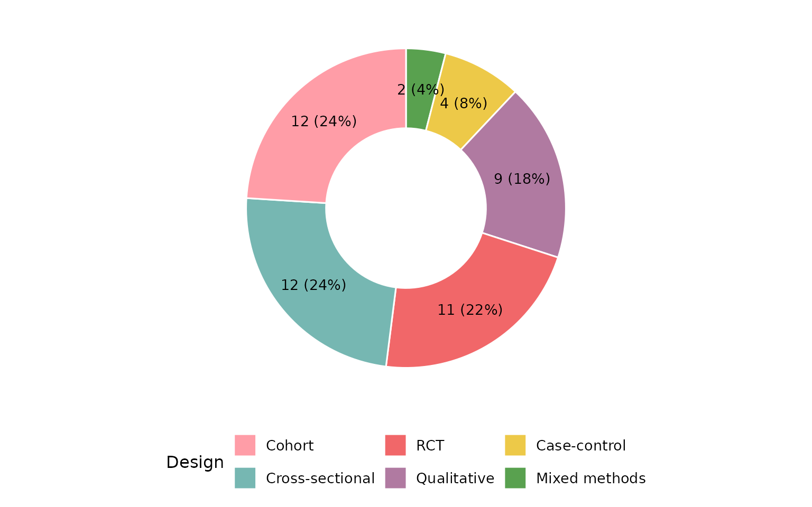
Set donut = FALSE for a classic pie:
reviewPie(studies, Design, donut = FALSE)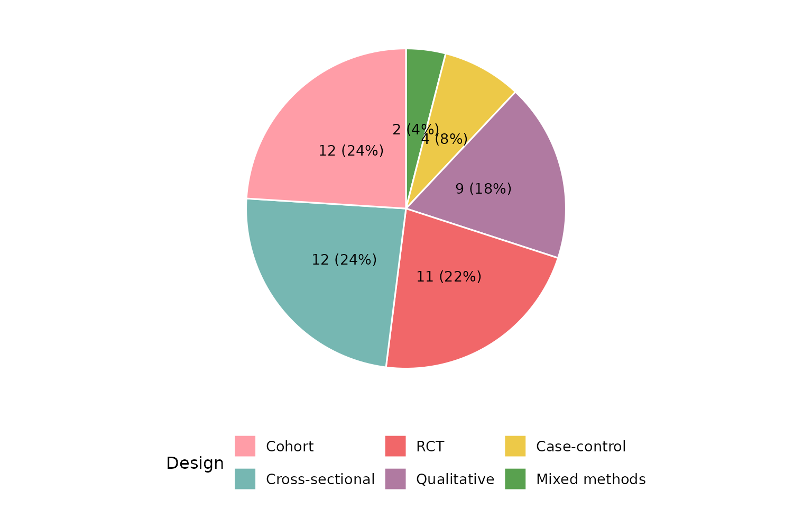
Co-occurrence heatmap
reviewOverlap() shows how two columns co-occur across
studies:
reviewOverlap(studies, Design, Outcome, fill = PALETTE[3])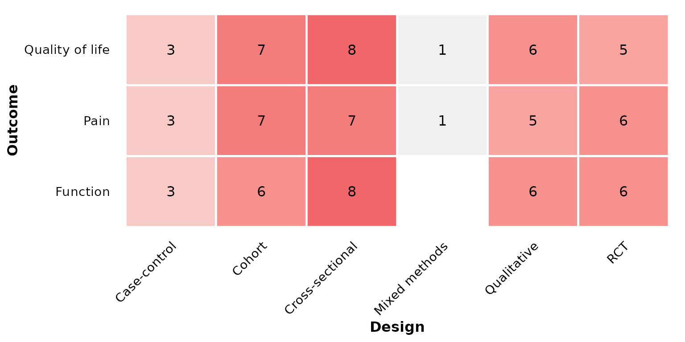
Alluvial plot
reviewAlluvial() shows co-occurrence and flow between
categories across multiple columns. Each study traces a path through the
strata. Requires the ggalluvial package.
reviewAlluvial(studies, c("Design", "Outcome"))
Add proportion or count labels on each stratum:
reviewAlluvial(studies, c("Design", "Outcome"), labels = "prop")
Show flow counts between strata:
reviewAlluvial(studies, c("Design", "Outcome"), labels = "none",
flow_labels = TRUE)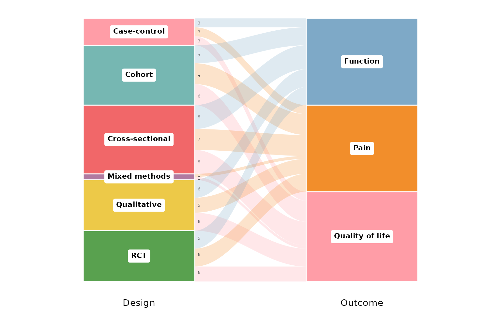
Custom axis labels:
reviewAlluvial(studies, c("Design", "Outcome","AgeGroup"),
axis_labels = c("Study Design", "Reported Outcome", "Age group"))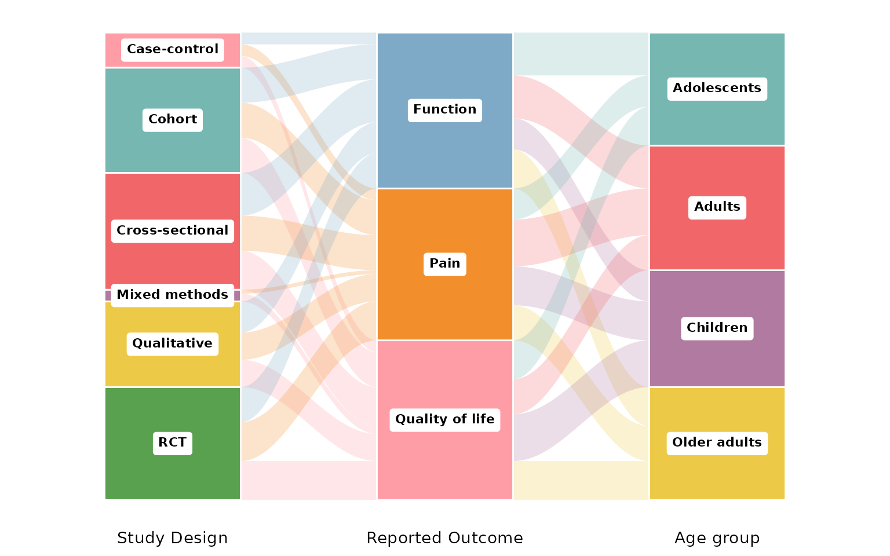
Treemap
reviewTreemap() displays category frequencies as nested
rectangles whose area is proportional to the count. Requires the
treemapify package.
reviewTreemap(studies, Design)
Use color_by to add a hierarchical grouping. Here we
show interventions colored by their higher-order type:
reviewTreemap(studies, Intervention, color_by = InterventionType)
Show study IDs inside each rectangle:
reviewTreemap(studies, Design, studlabs = TRUE)
Year trend
reviewTrend() shows how categories distribute across
publication years:
reviewTrend(studies, Design)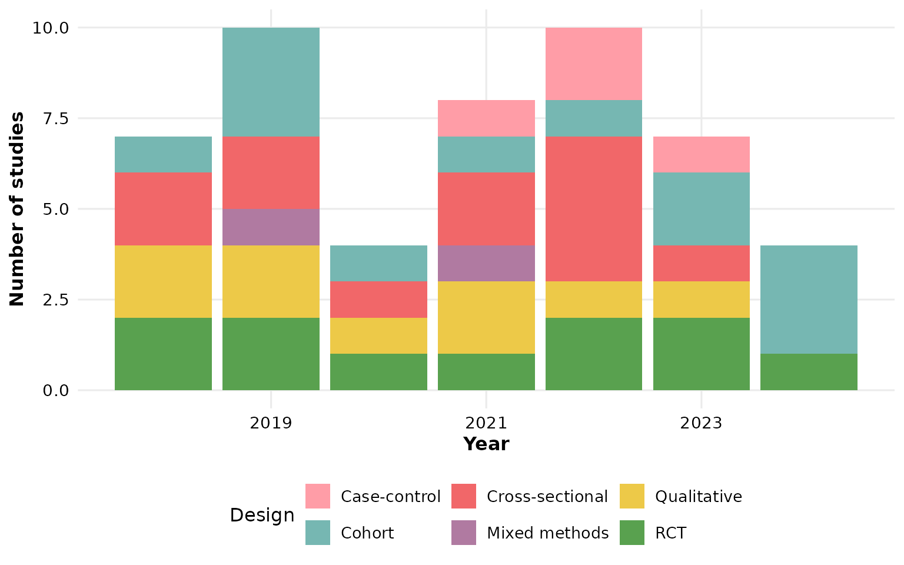
Add counts, within-year percentages, or both on each segment:
reviewTrend(studies, Design, labels = "count")
reviewTrend(studies, Design, labels = "percent")
reviewTrend(studies, Design, labels = "both")Or overlay study IDs:
reviewTrend(studies, Design, labels = "studies")World map
reviewMap() shades countries by the number of studies.
Common aliases like “United States” or “United Kingdom” are resolved
automatically:
reviewMap(studies)
Summary table
reviewTable() returns a formatted gt
table:
reviewTable(studies, Design)| Design | Studies | Frequency | Percent |
|---|---|---|---|
| RCT | S06, S17, S20, S21, S22, S24, S28, S32, S37, S39, S45 | 11 | 22% |
| Qualitative | S01, S03, S08, S18, S33, S35, S38, S43, S49 | 9 | 18% |
| Mixed methods | S05, S50 | 2 | 4% |
| Cross-sectional | S04, S07, S09, S10, S11, S14, S19, S30, S34, S42, S44, S48 | 12 | 24% |
| Cohort | S02, S12, S15, S16, S25, S26, S29, S31, S40, S41, S46, S47 | 12 | 24% |
| Case-control | S13, S23, S27, S36 | 4 | 8% |
Handling missing data
Literature review datasets often have missing values. All functions
accept na.rm, na_label, and
na_in_percent to control how NAs are handled.
Let’s create example data with some missing values:
df_na <- data.frame(
StudyID = paste0("S", 1:10),
Design = c("RCT", "Cohort", NA, "RCT", "Case-control",
NA, "RCT", "Cohort", NA, "RCT"),
stringsAsFactors = FALSE
)Drop NAs, percentages of total (default)
NAs are dropped, but the denominator is all 10 studies. Percentages reflect the share of the full sample, so they do not sum to 100%:
summarize_data(df_na, Design)
#> # A tibble: 3 × 4
#> Design Studies Frequency Percent
#> <chr> <chr> <int> <dbl>
#> 1 Case-control S5 1 10
#> 2 Cohort S2, S8 2 20
#> 3 RCT S1, S4, S7, S10 4 40Drop NAs, percentages of reported only
Set na_in_percent = FALSE so that the denominator only
counts the 7 studies that reported a design. Percentages sum to
100%:
summarize_data(df_na, Design, na_in_percent = FALSE)
#> # A tibble: 3 × 4
#> Design Studies Frequency Percent
#> <chr> <chr> <int> <dbl>
#> 1 Case-control S5 1 14.3
#> 2 Cohort S2, S8 2 28.6
#> 3 RCT S1, S4, S7, S10 4 57.1Keep NAs, percentages of total
Set na.rm = FALSE to include a “Not reported” category.
All percentages sum to 100%:
summarize_data(df_na, Design, na.rm = FALSE)
#> # A tibble: 4 × 4
#> Design Studies Frequency Percent
#> <chr> <chr> <int> <dbl>
#> 1 Case-control S5 1 10
#> 2 Cohort S2, S8 2 20
#> 3 Not reported S3, S6, S9 3 30
#> 4 RCT S1, S4, S7, S10 4 40Keep NAs with a custom label, percentages of reported
Combine all three parameters. Here “Missing” replaces
NA, and the denominator excludes missing rows:
summarize_data(df_na, Design, na.rm = FALSE, na_label = "Missing",
na_in_percent = FALSE)
#> # A tibble: 4 × 4
#> Design Studies Frequency Percent
#> <chr> <chr> <int> <dbl>
#> 1 Case-control S5 1 14.3
#> 2 Cohort S2, S8 2 28.6
#> 3 Missing S3, S6, S9 3 42.9
#> 4 RCT S1, S4, S7, S10 4 57.1Custom study ID column
All functions default to study_id = StudyID. If your
data uses a different column, pass it:
df <- data.frame(
ID = paste0("A", 1:5),
Type = c("X", "Y", "X", "Z", "X"),
stringsAsFactors = FALSE
)
reviewBar(df, Type, study_id = ID)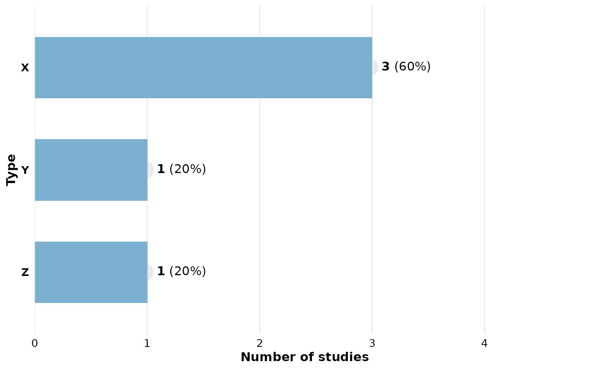
Using summarize_data() directly
If you need the raw summary data frame (e.g. for further processing),
use summarize_data(). Note that Percent is
numeric:
summarize_data(studies, Design)
#> # A tibble: 6 × 4
#> Design Studies Frequency Percent
#> <chr> <chr> <int> <dbl>
#> 1 Mixed methods S05, S50 2 4
#> 2 Case-control S13, S23, S27, S36 4 8
#> 3 Qualitative S01, S03, S08, S18, S33, S35, S38, S43, S49 9 18
#> 4 RCT S06, S17, S20, S21, S22, S24, S28, S32, S37… 11 22
#> 5 Cross-sectional S04, S07, S09, S10, S11, S14, S19, S30, S34… 12 24
#> 6 Cohort S02, S12, S15, S16, S25, S26, S29, S31, S40… 12 24